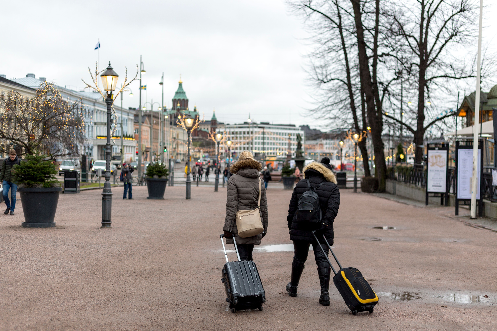

Study in Central Europe: Where You Can Study and Travel on Weekends
Explore Central European study destinations and the possibilities for easy weekend travel.
Read article →CATEGORY
Travel ideas, weekend adventures and ways to explore while studying abroad.

Explore Central European study destinations and the possibilities for easy weekend travel.
Read article →Think beyond tourist destinations and look at trains, buses, airports and realistic weekend connections.